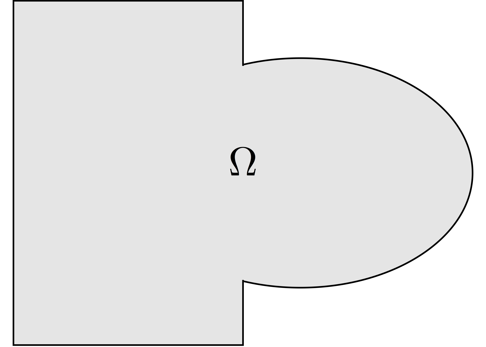
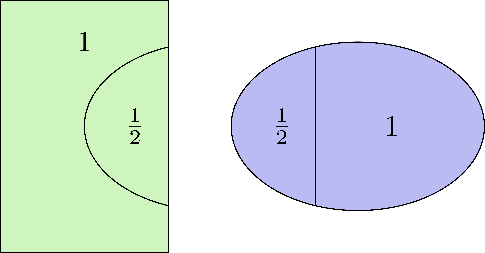

class: left, top # Why Domain Decomposition Methods ? How can we solve a large sparse linear system $A u = b \in \mathbb{R}^n$ ?  --- ## [Step 1: Decompose the mesh](http://127.0.0.1:8000/documentation/ffddm/documentation/#overlapping-mesh-decomposition) Build a collection of $N$ overlapping sub-meshes $(Th\_{i})\_{i=1}^N$ from the global mesh $Th$ <div style="overflow: hidden; display: inline-block;">  <img src="figures/domain2.png" width = 35% style="float:right"/> </div> ```cpp ffddmbuildDmesh( prmesh , Th , comm ) ``` - mesh distributed over the mpi processes of communicator **comm** - initial mesh **Th** partitioned with *metis* by default - size of the overlap given by [ffddmoverlap](http://127.0.0.1:8000/documentation/ffddm/parameters/#global-parameters) (default 1) `prmesh#Thi` is the local mesh of the subdomain for each mpi process CHANGER TH EN THGLOBAL POUR EVITER CONFUSION CHANGER LES P POUR LES PREFIXES? CHANGER VHGLOBAL ?? --- ```cpp macro dimension 2// EOM // 2D or 3D include "ffddm.idp" mesh Th = square(50,50); // global mesh *// Step 1: Decompose the mesh *ffddmbuildDmesh( P , Th , mpiCommWorld ) ``` ```cpp medit("Th"+mpirank, PThi); ``` Copy and paste this to a file 'test.edp' and run it: ```console $ ff-mpirun -np 2 test.edp -glut ffglut ``` --- ## [Step 2: Define your finite element](http://127.0.0.1:8000/documentation/ffddm/documentation/#local-finite-element-spaces) ```cpp ffddmbuildDfespace( prfe , prmesh , scalar , def , init , Pk ) ``` builds the local finite element spaces and associated distributed operators on top of the mesh decomposition **prmesh** - **scalar**: type of data for this finite element: *real* or *complex* - **Pk**: your type of finite element: P1, [P2,P2,P1], ... - **def**, **init**: macros specifying how to define and initialize a **Pk** FE function `prfe#Vhi` is the local FE space defined on `prmesh#Thi` for each mpi process .pull-left[ example for P2 *complex*: ```cpp macro def(u) u // EOM macro init(u) u // EOM ffddmbuildDfespace( P , P , complex , def , init , P2 ) ``` ] .pull-right[ example for [P2,P2,P1] *real*: ```cpp macro def(u) [u, u#B, u#C] // EOM macro init(u) [u, u, u] // EOM ffddmbuildDfespace( P , P , real , def , init , [P2,P2,P1] ) ``` ] --- ## [Step 2: Define your finite element](http://127.0.0.1:8000/documentation/ffddm/documentation/#local-finite-element-spaces) ### Distributed vectors and restriction operators <div> <img src="figures/domain2.png" width = 35% style="float:right"/> </div> Natural decomposition of the set of d.o.f.'s ${\mathcal N}$ of $Vh$ into the $N$ subsets of d.o.f.'s $({\mathcal N}\_i)\_{i=1}^N$ each associated with the local FE space $Vh\_i$ $${\mathcal N} = \cup\_{i=1}^N {\mathcal N}\_i\,, $$ but with duplications of the d.o.f.'s in the overlap **_Definition_** a *distributed vector* is a collection of local vectors $({\mathbf V\_i})\_{1\le i\le N}$ so that the values on the duplicated d.o.f.'s are the same: $$ {\mathbf V}\_i = R\_i\,{\mathbf V}, \quad i = 1, ..., N $$ where ${\mathbf V}$ is the corresponding global vector and $R\_i$ is the *restriction operator* from ${\mathcal N}$ into ${\mathcal N}\_i$ **_Remark_** $R\_i^T$ is the *extension operator*: extension by $0$ from ${\mathcal N}\_i$ into ${\mathcal N}$ --- ## [Step 2: Define your finite element](http://127.0.0.1:8000/documentation/ffddm/documentation/#local-finite-element-spaces) ### Partition of unity <div style="overflow: hidden; display: inline-block;"> <div>  </div> Duplicated unknowns coupled via a *partition of unity*: $$ I = \sum\_{i = 1}^N R\_i^T D\_i R\_i $$ </div> $(D\_i)\_{1\le i \le N}$ are square diagonal matrices of size #${\mathcal N}\_i$ $$ {\mathbf V} = \sum\_{i = 1}^N R\_i^T D\_i R\_i {\mathbf V} = \sum\_{i = 1}^N R\_i^T D\_i {\mathbf V\_i} $$ --- ## [Step 2: Define your finite element](http://127.0.0.1:8000/documentation/ffddm/documentation/#local-finite-element-spaces) ### Data exchange between neighbors ```cpp func prfe#update(K[int] vi, bool scale) ``` synchronizes local vectors ${\mathbf V}\_i$ between subdomains $\Rightarrow$ exchange the values of ${\mathbf V}\_i$ shared with neighbors in the overlap region $$ {\mathbf V}\_i \leftarrow R\_i \left( \sum\_{j=1}^N R\_j^T D\_j {\mathbf V}\_j \right) = D\_i {\mathbf V}\_i + \sum\_{j\in \mathcal{O}(i)} R\_i\,R\_j^T\,D\_j {\mathbf V}\_j $$ where $\mathcal{O}(i)$ is the set of neighbors of subdomain $i$. Exchange operators $R_i\,R_j^T$ correspond to neighbor-to-neighbor MPI communications .pull-left[ ```cpp Pupdate(vi, false); ``` $$ {\mathbf V}\_i \leftarrow R\_i \left( \sum\_{j=1}^N R\_j^T {\mathbf V}\_j \right) $$ ] .pull-right[ ```cpp Pupdate(vi, true); ``` $$ {\mathbf V}\_i \leftarrow R\_i \left( \sum\_{j=1}^N R\_j^T D\_j {\mathbf V}\_j \right) $$ ] --- ```cpp macro dimension 2// EOM // 2D or 3D include "ffddm.idp" mesh Th = square(50,50); // global mesh // Step 1: Decompose the mesh ffddmbuildDmesh( P , Th , mpiCommWorld ) *// Step 2: Define your finite element *macro def(u) u // EOM *macro init(u) u // EOM *ffddmbuildDfespace( P , P , real , def , init , P2 ) ``` ```cpp PVhi vi = x; medit("v"+mpirank, PThi, vi); vi[] = PDk[mpirank]; medit("D"+mpirank, PThi, vi); vi = 1; Pupdate(vi[],true); medit("1", PThi, vi); Pupdate(vi[],false); medit("multiplicity", PThi, vi); ``` METTRE DU PLOT AVEC FFDDMPLOT ET REMONTER FFDDMPLOT SUR PRFE ET CHANGER LES EX --- ## [Step 3: Define your problem](http://127.0.0.1:8000/documentation/ffddm/documentation/#define-the-problem-to-solve) ```cpp ffddmsetupOperator( pr , prfe , Varf ) ``` builds the distributed operator associated to your variational form on top of the distributed FE **prfe** **Varf** is a macro defining your abstract variational form ```cpp macro Varf(varfName, meshName, VhName) varf varfName(u,v) = int2d(meshName)(grad(u)'* grad(v)) + int2d(meshName)(f*v) + on(1, u = 0); // EOM ``` $\Rightarrow$ assemble local 'Dirichlet' matrices $A\_i = R\_i A R\_i^T$ <div style="overflow: hidden;"> .pull-left31[ $$A = \sum\_{i=1}^N R\_i^T D\_i A\_i R\_i$$ ] .pull-right65[ **Warning** only true because $D\_i R\_i A = D\_i A R\_i$ due to the fact that $D\_i$ vanishes at the interface **!!** ] </div> `pr#A` applies $A$ to a distributed vector: ${\mathbf U}\_i \leftarrow R\_i \sum\_{j=1}^N R\_j^T D\_j A\_j {\mathbf V}\_j$ $\Rightarrow$ multiply by $A\_i$ + `prfe#update` --- ```cpp macro dimension 2// EOM // 2D or 3D include "ffddm.idp" mesh Th = square(50,50); // global mesh // Step 1: Decompose the mesh ffddmbuildDmesh( P , Th , mpiCommWorld ) // Step 2: Define your finite element macro def(u) u // EOM macro init(u) u // EOM ffddmbuildDfespace( P , P , real , def , init , P2 ) *// Step 3: Define your problem *macro grad(u) [dx(u), dy(u)] // EOM *macro Varf(varfName, meshName, VhName) * varf varfName(u,v) = int2d(meshName)(grad(u)'* grad(v)) + int2d(meshName)(1*v) * + on(1, u = 0); // EOM *ffddmsetupOperator( P , P , Varf ) * *PVhi ui, bi; *ffddmbuildrhs( P , Varf , bi[] ) ``` ```cpp ui[] = PA(bi[]); ffddmplot(P, ui, "A*b") ``` --- ## [Step ??: Solve the linear system with the parallel direct solver *MUMPS*](http://127.0.0.1:8000/documentation/ffddm/documentation/#define-the-problem-to-solve) ```cpp func K[int] pr#directsolve(K[int]& bi) ``` We have $A$ and $b$ in distributed form, we can solve the linear system $A u = b$ using the parallel direct solver *MUMPS* ```cpp // Step ??: solve the problem using the direct parallel solver MUMPS ui[] = Pdirectsolve(bi[]); ffddmplot(P, ui, "u") ``` --- ## [Step 4: Define the one level DD preconditioner](http://127.0.0.1:8000/documentation/ffddm/documentation/#one-level-preconditioners) ```cpp ffddmsetupPrecond( pr , VarfPrec ) ``` builds the one level preconditioner for problem **pr**. By default it is the *Restricted Additive Schwarz (RAS)* preconditioner: $$ M^{-1}\_1 = M^{-1}\_{\text{RAS}} = \sum\_{i=1}^N R\_i^T D\_i A\_i^{-1} R\_i \quad \text{with}\; A\_i = R\_i A R\_i^T $$ **_Setup step_**: compute the $LU$ (or $L D L^T$) factorization of local matrices $A\_i$ `pr#PREC1` applies $M^{-1}\_1$ to a distributed vector: ${\mathbf U}\_i \leftarrow R\_i \sum\_{j=1}^N R\_j^T D\_j A\_j^{-1} {\mathbf V}\_i$ $\Rightarrow$ apply $A\_i^{-1}$ (forward/backward substitutions) + `prfe#update` --- ## [Step 5: Solve the linear system with preconditioned GMRES](http://127.0.0.1:8000/documentation/ffddm/documentation/#solving-the-linear-system) ```cpp func K[int] pr#fGMRES(K[int]& x0i, K[int]& bi, real eps, int nitermax, string sprec) ``` solves the linear system with flexible GMRES with DD preconditioner $M^{-1}$ - **x0i**: initial guess - **bi**: right-hand side - **eps**: relative tolerance - **nitermax**: maximum number of iterations - **sprec**: `"left"` or `"right"` preconditioning DETAILLER LEFT ET RIGHT ? --- ```cpp macro dimension 2// EOM // 2D or 3D include "ffddm.idp" mesh Th = square(50,50); // global mesh // Step 1: Decompose the mesh ffddmbuildDmesh( P , Th , mpiCommWorld ) // Step 2: Define your finite element macro def(u) u // EOM macro init(u) u // EOM ffddmbuildDfespace( P , P , real , def , init , P2 ) // Step 3: Define your problem macro grad(u) [dx(u), dy(u)] // EOM macro Varf(varfName, meshName, VhName) varf varfName(u,v) = int2d(meshName)(grad(u)'* grad(v)) + int2d(meshName)(1*v) + on(1, u = 0); // EOM ffddmsetupOperator( P , P , Varf ) PVhi ui, bi; ffddmbuildrhs( P , Varf , bi[] ) *// Step 4: Define the one level DD preconditioner *ffddmsetupPrecond( P , Varf ) *// Step 5: Solve the linear system with GMRES *PVhi x0i = 0; *ui[] = PfGMRES(x0i[], bi[], 1.e-6, 200, "right"); ``` ```cpp ffddmplot(P, ui, "u") Pwritesummary ``` --- # Recap on the Domain Decomposition Method ## One-level DD preconditioners Consider the linear system `\(A u = f \in \mathbb{R}^n\)` Given a decomposition of `\([\![1;n]\!]\)`, `\((\mathcal{N}_1, \mathcal{N}_2)\)`, define: - factorizes - aze --- ```cpp macro dimension 3// EOM // 2D or 3D include "ffddm.idp" int[int] LL = [2,2, 1,2, 2,2]; mesh3 ThGlobal = cube(10, 10, 10, [x, y, z], label = LL); // global mesh macro grad(u) [dx(u), dy(u), dz(u)]// EOM // three-dimensional gradient macro Varf(varfName, meshName, VhName) varf varfName(u,v) = int3d(meshName)(grad(u)'* grad(v)) + int3d(meshName)(v) + on(1, u = 1.0); // EOM // Domain decomposition *ffddmbuildDmesh( Lap , ThGlobal , mpiCommWorld ) macro def(i)i// EOM // scalar field definition macro init(i)i// EOM // scalar field initialization ffddmbuildDfespace( Lap , Lap , real , def , init , P1 ) ffddmsetupOperator( Lap ,Lap , Varf ) real[int] rhsi(0); ffddmbuildrhs( Lap , Varf , rhsi ) LapVhi def(ui); //Direct solve ui[] = Lapdirectsolve(rhsi); Lapwritesummary ffddmplot(Lap,ui,"u"); ``` --- ## Overlapping mesh decomposition ```cpp ffddmbuildDmesh(pr,Th,comm) ``` decomposes the mesh **Th** into overlapping submeshes. The mesh will be distributed over the mpi ranks of communicator **comm**. This will create and expose variables whose names will be prefixed by **pr**, see below (# is the concatenation operator). The way the initial mesh **Th** is partitioned depends on the value of [ffddmpartitioner](parameters.md#global-parameters). The size of the overlap between subdomains (its width in terms of number of mesh elements) is given by [ffddmoverlap](parameters.md#global-parameters). The level of refinement of the resulting submeshes with respect to the input mesh **Th** is given by [ffddmsplit](parameters.md#global-parameters). If [ffddmexclude](parameters.md#global-parameters) $\neq 0$, the first [ffddmpCS](parameters.md#global-parameters) mpi ranks of **comm** will be excluded from the spatial domain decomposition, in order to dedicate them later to the coarse problem (for two-level preconditioners). The label of the new border of the submeshes (the interface between the subdomains) is given by [ffddminterfacelabel](parameters.md#global-parameters). ***defines***: - `int pr#npart` number of subdomains for this decomposition; should be equal to mpiSize(**comm**) - [ffddmexclude](parameters.md#global-parameters) * [ffddmpCS](parameters.md#global-parameters) - `meshN[int] pr#aTh` array (size `pr#npart`) of local meshes of the subdomains. In the standard parallel case, only the local mesh for this mpi rank `pr#aTh[mpiRank(pr#commddm)]` is defined (unless this mpi rank is excluded from the spatial domain decomposition, i. e. `prmesh#excluded` = 1, see below). In the sequential case, all local meshes are defined. - `meshN pr#Thi` the local mesh of the subdomain for this mpi rank, i. e. `pr#aTh[mpiRank(pr#commddm)]` in the parallel case - `int pr#numberIntersection` the number of neighbors for this mpi rank - `int[int] pr#arrayIntersection` the list of neighbor ranks in `pr#commddm` for this mpi rank - `int pr#pCS` equal to [ffddmpCS](parameters.md#global-parameters) - `int pr#exclude` equal to [ffddmexclude](parameters.md#global-parameters) - `int pr#excluded` *true* if [ffddmexclude](parameters.md#global-parameters) is *true* ($\neq 0$) and mpiRank(**comm**) < `pr#pCS`. In this case, this mpi rank will be excluded from the spatial domain decomposition and will only work on the coarse problem. - `mpiComm pr#commddm` mpi communicator for ranks participating in the spatial domain decomposition (ranks 0 to `pr#npart`-1 in **comm** if `pr#exclude` is *false*, ranks `pr#pCS` to `pr#pCS`+`pr#npart`-1 otherwise) - `mpiComm pr#commCS` mpi communicator for ranks participating in the assembly and resolution of the coarse problem for two-level preconditioners (ranks 0 to `pr#pCS` - 1 in **comm**) - `mpiComm pr#commself` self mpi communicator (this mpi rank only), used for factorizing local matrices